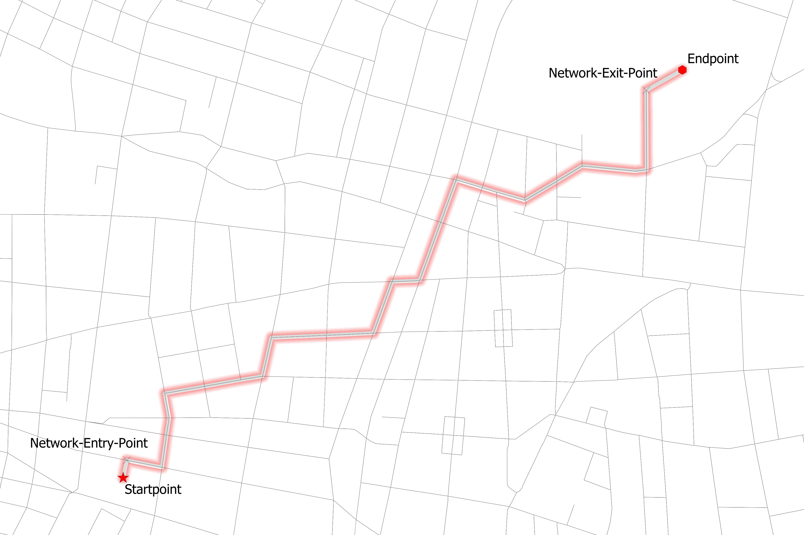

Home
(current)
Algorithms
Shortest Path
Iso-Area
OD-Matrices
Installation and Setup
Features and Concepts
QNEAT3
QGIS Network Analysis Toolbox 3
Data Source:
Stadt Wien – data.wien.gv.at
QNEAT3 Concepts

Concept of network entry- and exit-segments/cost
Tip: Dont close algorithm after it is finished. Processing Log gives more information about the computation process.